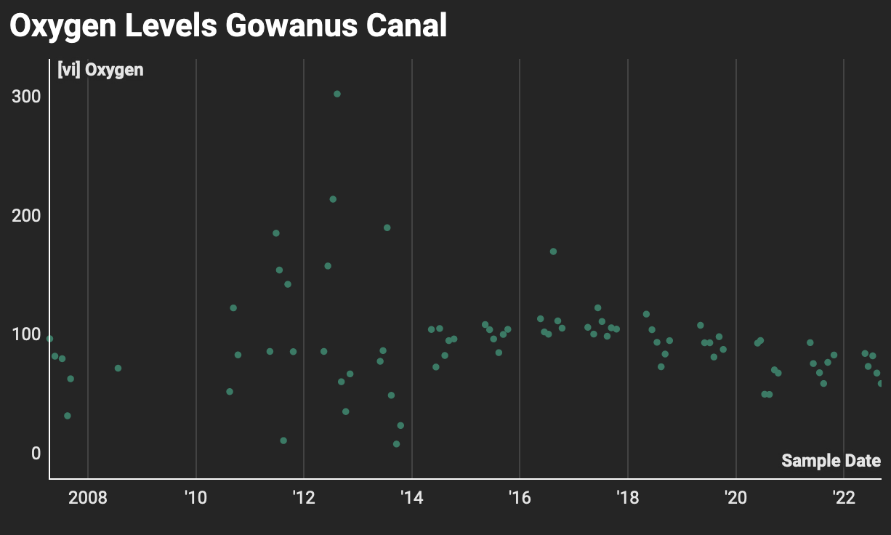

The Gowanus Canal dates back over 300 years and was at one point the busiest waterway in the "United States. Despite being just under 2 miles long, the canal served as a vital thruway for industry prior to the construction of the Verazano Bridge and the Gowanus Expressway. During the time period that it operated, and continuing on until present day, it was by its very nature the most contaminated waterway in the United States as well as the busiest. Due to the outsize amount of industries that lay above the embankments of the river, the largest culprits in the contamination of the waterway were the manufactured gas plants. At one point of twenty-two of these plants were built along the canal and those plant's largest byproduct was coal tar.
Fig.1 - The Gowanus Canal
The coal tar would create a substance resting at the bottom of the canal that was referred to as "black mayonnaise" in reference to the sludge-like composition and appearance. Prior to the cleanup there was less than 2 PPM (Parts per Million) of Oxygen in the water samples that were taken from the canal,far below the 4 PPM required to sustain aquatic life. In fact in the samples taken there was often times more fecal matter than there was oxygen in the water. The chart below shows oxygen levels in the Canal dating back to 2007. The data was sourced from Riverkeeper, a non-profit organization that has been fighting pollution and polluters in the Hudson River since the 1960s. In describing the materials present in the waterway they state, "the canal has become heavily contaminated with PCBs, heavy metals, pesticides, volatile organic compounds, sewage solids from combined sewer overflows, and polycyclic aromatic hydrocarbons (PAHs)."

Fig.2 - Oxygen Saturation Chart, Data Sourced from
Prior to 2016, when the cleanup was kicked into gear by the EPA, the oxygen levels varied much more wildly. With both the oversaturation and undersaturation of oxygen a result of gross contamination, the goal would be to have the oxygen saturation hover near the one hundred percent benchmark. That goal has been achieved by the EPA in the Gowanus Canal, as one can see from the chart that in recent years the oxygen saturation has been nearly one hundred percent at every single sample taken.